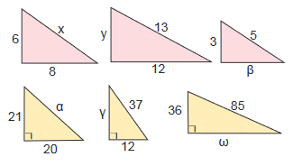

5. Ρίζες Θετικών Αριθμών
Μάθημα 2 – Βασικές Πράξεις
Να υπολογίσετε τις τετραγωνικές ρίζες:
- `sqrt 36`, `sqrt 3600`, `sqrt 0.36`
- `sqrt 144`, `sqrt 1.44`, `sqrt 14400`, `sqrt 0.000144`
Να απλοποιήσετε τις παραστάσεις
- `{:sqrt 4:}^2`
- `sqrt {:7^2:}`
- `sqrt {:(-6)^2:}`
Να υπολογίσετε τις τετραγωνικές ρίζες:
- `sqrt {:36 / 9:}`
- `sqrt {:400 / 144:}`
- `sqrt {:36 / 121:}`
Ποιες από τις παρακάτω προτάσεις είναι σωστές;
- `sqrt {:α cdot β:} = sqrt α cdot sqrt β`
- `sqrt {: α / β :} = {:sqrt α :}/{: sqrt β:}`
- `sqrt {:α+β:} = sqrt α + sqrt β`
- `sqrt {:α -β:} = sqrt α - sqrt β`
Να κάνετε τις πράξεις:
- `sqrt 625 / sqrt 225 - sqrt 169`
- `sqrt 25 cdot {:1 / 5:} - 6 cdot {: 1 / sqrt 36:}`
Κάνετε τις πράξεις:
- `sqrt sqrt sqrt 256`
- `sqrt {: 2 + sqrt 4:}`
- `sqrt{: 8 + sqrt 64:} - sqrt {: 1 + sqrt 9:}`
Να βρείτε τις δύο λύσεις των παρακάτω εξισώσεων:
- `x ^2 =16`
- `α^2 = 256`
- `α^2= 49`
Αφού κάνετε τις πράξεις να διατάξετε τους αριθμούς
`α^2, α, sqrt α` στις παρακάτω περιπτώσεις
- α=4
- α=9
- α=16
Τι παρατηρείτε;
Αφού κάνετε τις πράξεις να διατάξετε τους αριθμούς
`α^2, α, sqrt α` στις παρακάτω περιπτώσεις
- `α=1 / 4`
- `α= 1 / 9`
- `α=1 / 16`
Τι παρατηρείτε;
Αφού κάνετε τις πράξεις να διατάξετε τους αριθμούς
`α^2, α, sqrt α` στις παρακάτω περιπτώσεις
- α=0
- α=1
Τι παρατηρείτε;
Να υπολογίστε την άγνωστη πλευρά των παρακάτω ορθογωνίων τριγώνων:

Αν
`α`,
`β`,
`γ` είναι οι πλευρές ενός ορθογωνίου τριγώνου
`ΑΒΓ` με
`hat Α=90^ο`, αν λάβετε υπόψιν ότι απέναντι από την γωνία
`hat Α ` είναι η πλευρά
` α`, να υπολογίσετε την πλευρά που λείπει.
- `α=5, β= x, γ=3`
- `α= x, β=5, γ=12`
- `α=37 / 2, β= x , γ=35 / 2`
- `α=25, β=7, γ= x `
- `α= x , β=40, γ=9`
- `α=61, β= x , γ=11`
- `α=25, β=7, γ= x `
Να επιλέξετε τις σωστές απαντήσεις. Ενώ όποιες είναι λανθασμένες να τις διορθώσετε
Σε ένα ισοσκελές τρίγωνο:
- και οι τρεις πλευρές είναι ίσες
- βάση ονομάζεται αυτή που ακουμπάει στο έδαφος
- οι γωνίες που πρόσκεινται στην βάση είναι ίσες με 45 μοίρες
- και οι τρεις γωνίες του τριγώνου είναι ίσες
- το ύψος είναι και διάμεσος και διχοτόμος
Να επιλέξετε τις σωστές απαντήσεις. Ενώ όποιες είναι λανθασμένες να τις διορθώσετε
Σε ένα ορθογώνιο τρίγωνο:
- οι δύο γωνίες είναι ίσες με 90 μοίρες η κάθε μία,
- έχει δύο πλευρές ίσες,
- η μεγαλύτερη πλευρά ονομάζεται υποτείνουσα και οι άλλες δύο κάθετες,
- ισχύει το Πυθαγόρειο θεώρημα,
- μπορεί να είναι ισοσκελές
- μπορεί να είναι ισόπλευρο
- Όλες οι γωνίες του έχουν άθροισμα ίσο με 180 μοίρες.